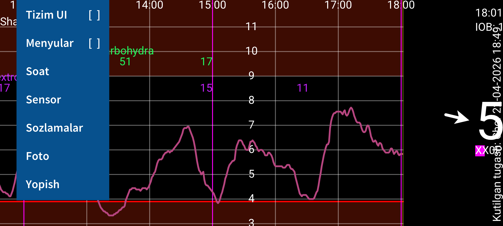
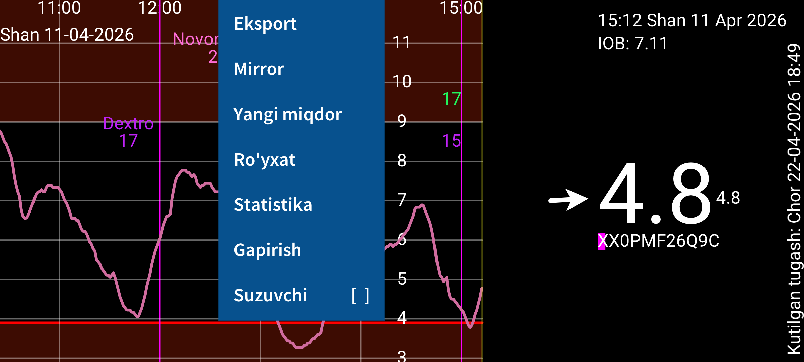
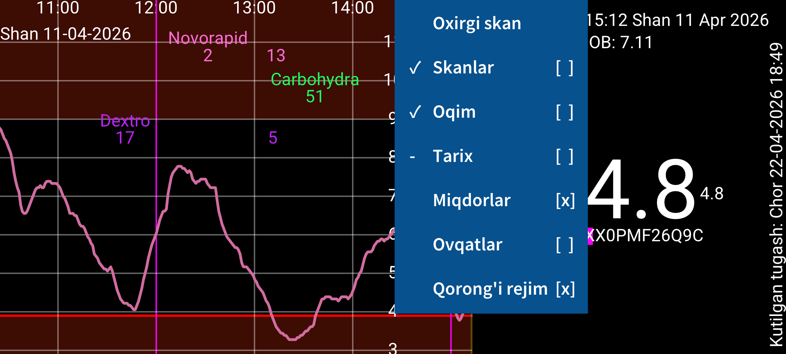
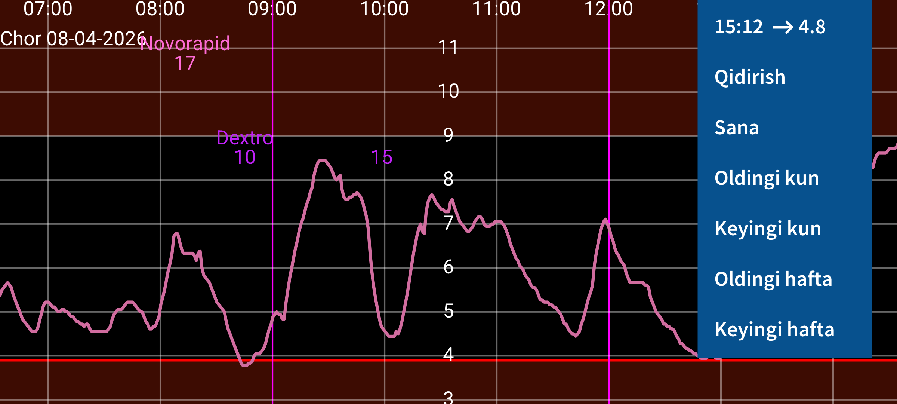

ar be de es fr hi it ja ko nl pl pt ru tr uk uz zh en
Juggluco — diabet bilan yashovchi odamlar uchun glyukozani kuzatish ilovasi. U FreeStyle Libre 0 va 2 sensorlarini NFC orqali skan qila oladi va Bluetooth orqali quyidagi sensorlardan glyukoza qiymatlarini oladi: FreeStyle Libre 2, 2+, 3, 3+, Sibionics GS1Sb, Dexcom G7/ONE+, Accu‑Chek SmartGuide, CareSens Air va Aidex X.
Dastur birinchi marta ishga tushirilganda FreeStyle Libre 2 sensorini telefoningizdagi NFC joyiga yaqin tutib skan qilish mumkin. Shundan keyin Juggluco sensor bilan Bluetooth ulanishini o‘rnatishga urinadi va har daqiqada glyukoza qiymatini skan qilmasdan qabul qiladi.
Abbott Libre 3 ilovasi bilan ishga tushirilgan FreeStyle Libre 3 yoki 3+ sensorini Juggluco ga o‘tkazish uchun chap menyu→Sozlamalar→Ma’lumot almashish→Libreview bo‘limida sensor ishga tushirilganda ishlatilgan Libreview hisob ma’lumotlarini kiriting, Account ID olish ni bosing va Account ID kelguncha kuting. Shundan keyingina sensorni skan qiling.
FreeStyle Libre 3 reader bilan ishga tushirilgan Libre 3 sensorini yoki AQSh Libre ilovasi bilan ishga tushirilgan Libre 2/3 sensorini Juggluco ga ko‘chirib olish mumkin emas. Biroq yuqorida sanab o‘tilgan sensorlarning barchasi, agar ular boshqa ilova bilan faollashtirilmagan bo‘lsa, Juggluco bilan ishlaydi.
Sibionics GS1Sb, Dexcom G7/ONE+, Accu‑Chek SmartGuide, CareSens Air va Aidex X sensorlariga ulanish uchun chap menyu→Foto orqali Data Matrix kodini skan qilish kerak.
Dexcom G7/ONE+ sensorlari Bluetooth juftlash orqali ulanadi va ko‘p telefonlarda juftlashni juda tez tasdiqlash kerak bo‘ladi; aks holda yana 5 daqiqa kutishga to‘g‘ri keladi. Shu sababli ekran o‘chib qolmasin. Samsung Galaxy Watch 4 va 7 da bunday tasdiqlash talab qilinmaydi. Ishlatib bo‘lingan Dexcom G7/ONE+ sensorlari glyukoza yozishni to‘xtatgandan keyin ham ancha vaqt Bluetooth da faol qoladi; shu sababli eski sensorga ulanishning oldini olish uchun ularni yangi sensordan uzoqroq tuting.
Accu‑Chek SmartGuide sensorlari bilan juftlashganda PIN kiritish kerak bo‘ladi. Sensorlarga ulanish haqida batafsil: https://www.juggluco.nl/Juggluco/sensors.
Dasturda to‘rtta menyu bor. Ekranning bo‘sh joyiga tegib menyuni ochish mumkin:
Hozirgi vaqt
Qidirish
Sana
Oldingi kun
Keyingi kun
Oldingi hafta
Keyingi hafta
Grafikni chapga va o‘ngga siljitish uchun ekranda gorizontal surish mumkin. O‘ng tomondagi Harakat menyusi ham xuddi shu maqsadda xizmat qiladi. Sana ma’lum bir sanaga o‘tadi, Qidirish esa glyukoza qiymatlari va kiritilgan miqdorlarni topish uchun ishlatiladi. O‘ng menyudagi birinchi element joriy vaqt bo‘lib, uni tanlash grafikning eng o‘ngiga, ya’ni hozirgi vaqtga olib boradi.
Agar Sozlamalarda Glyukozani qo‘lda masshtablash yoqilgan bo‘lsa, ekranning yuqori qismida yuqoriga-pastga surish grafik maksimumini, pastki qismida surish esa minimumini o‘zgartiradi. Agar Vaqtni qo‘lda masshtablash yoqilgan bo‘lsa, ikki barmoq bilan kattalashtirish/kichraytirish orqali ko‘rsatilayotgan vaqt oralig‘ini o‘zgartirish mumkin.
Oxirgi skan
Skanlar [x]
Oqim [x]
Tarix [x]
Miqdorlar [x]
Ovqatlar [ ]
Qorong‘i rejim [x]
Markaziy menyuning o‘ng tomoni ko‘rsatish parametrlarini o‘z ichiga oladi. Oxirgi skanni ko‘rish uchun birinchi elementni bosing.
Skanlar dan keyingi belgi skan qiymatlari grafikda ko‘rsatilishini bildiradi. Skan — Libre 0 yoki Libre 2 sensorini skan qilganda olinadigan joriy glyukoza qiymati. Skan paytida sensordan so‘nggi 8 soatga oid, har 15 daqiqadagi qiymatlar ham telefonga o‘tadi. Ularning ko‘rinishini Tarix boshqaradi. Libre 3 sensorlari tarix qiymatlarini Bluetooth orqali yuboradi va ular har 5 daqiqada yangilanadi.
Oqim — FreeStyle Libre 2 va 3 sensorlari Bluetooth orqali har daqiqada yuboradigan glyukoza qiymatlari.
Insulin, uglevod va faollik kabi ma’lumotlarni ham istalgan yorliqlar bilan kiritish mumkin. Ular ko‘rsatilgan sana va vaqtda glyukoza grafikida belgilangan balandlikda ko‘rinadi. Grafikdagi nuqtalar yoki kiritilgan miqdorlarga tegish, shu element haqida ma’lumot beradi. Kiritilgan miqdorni uzoq bosib tahrirlash mumkin; bu chap o‘rta menyudagi ro‘yxat orqali ham amalga oshiriladi.
Miqdorlar kiritilgan miqdorlarning ko‘rinishini boshqaradi. Sozlamalar ichida bu miqdorlar uchun qaysi yorliqlar ishlatilishini belgilaysiz. Miqdorning ustida mos yorliq ko‘rsatiladi.
Eksport
Mirror
Yangi miqdor
Ro‘yxat
Statistika
Gapirish
Suzuvchi [ ]
Yangi miqdor orqali miqdorlar kiritiladi. Eksport ma’lumotlarni .tsv fayliga saqlaydi. Mirror ma’lumotni IP/TCP orqali boshqa qurilmadagi Juggluco nusxasiga yuborib, o‘sha yerda ham ko‘rsatishga imkon beradi.
Ro‘yxat kiritilgan miqdorlar ro‘yxatini ko‘rsatadi. Agar Juggluco Bluetooth orqali yetarli glyukoza qiymatlarini olgan bo‘lsa, Statistika bo‘limida ma’lum diapazonlardagi foizlar, GMI/HbA1c taxmini, glyukoza o‘zgaruvchanligi va kunning turli vaqtlaridagi taqsimot ko‘rinadi.
Gapirish bo‘limida Juggluco kelayotgan glyukoza qiymatlarini, grafikdagi elementlarni yoki xabarlarni ovoz chiqarib aytishi mumkin. Suzuvchi boshqa ilovalar ustida ko‘rinadigan suzuvchi glyukoza ni yoqadi.
Tizim UI [ ]
Menyular [ ]
Soat
Sensor
Sozlamalar
Foto
Yopish
Sozlamalar orqali glyukoza birligini mmol/L yoki mg/dL ga o‘zgartirish, yorliqlarni tanlash, glyukoza signallari va dori eslatmalarini sozlash, ko‘rsatish diapazonlarini belgilash mumkin.
Tizim UI Android boshqaruvlari va status paneli ko‘rinishini boshqaradi. Soat bo‘limida ma’lumotni aqlli soatlarga yuborishni sozlaysiz. Sensor bo‘limida sensor bilan ulanish holatini ko‘rasiz. Menyular barcha menyularni bir vaqtda ko‘rsatadi. Yopish esa Juggluco dan chiqish uchun ishlatiladi.